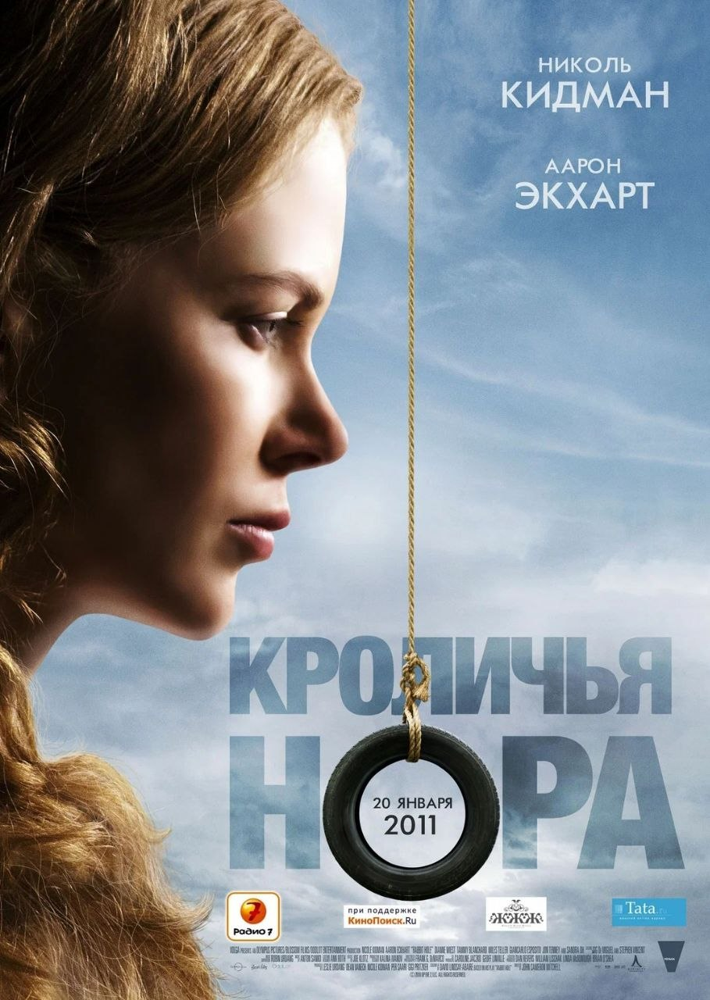
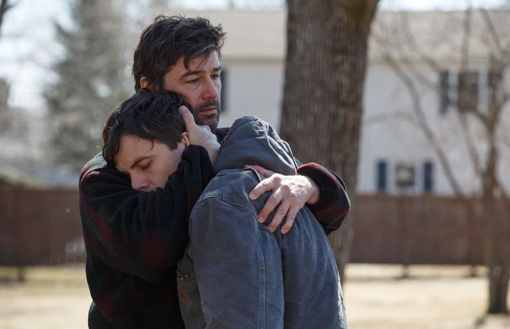
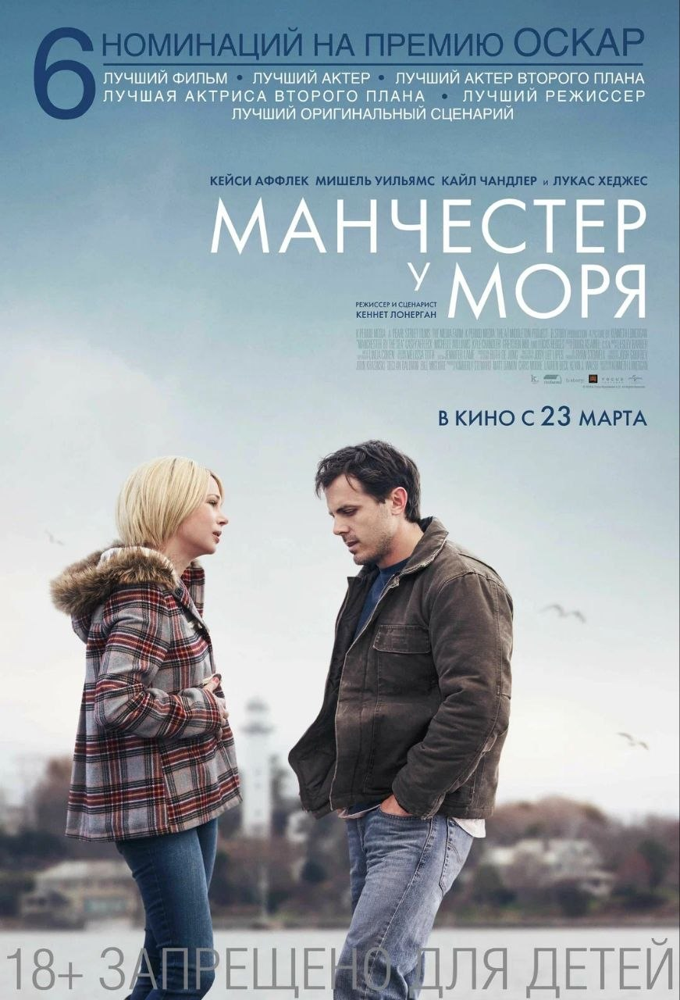
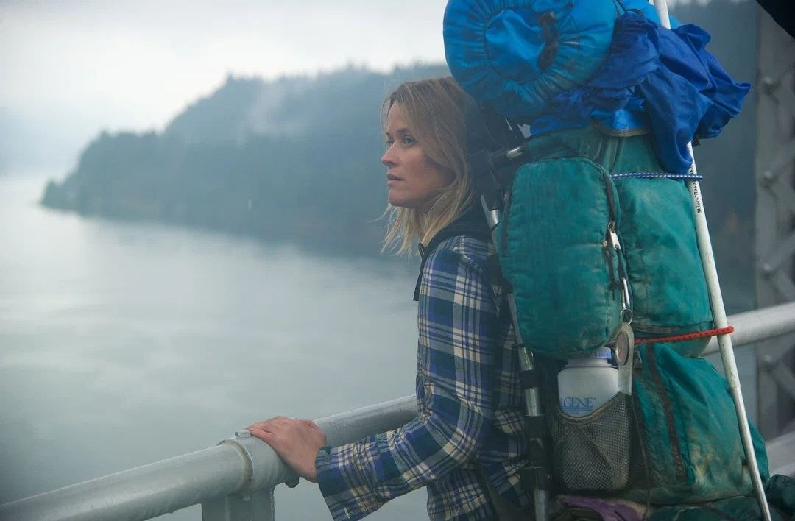
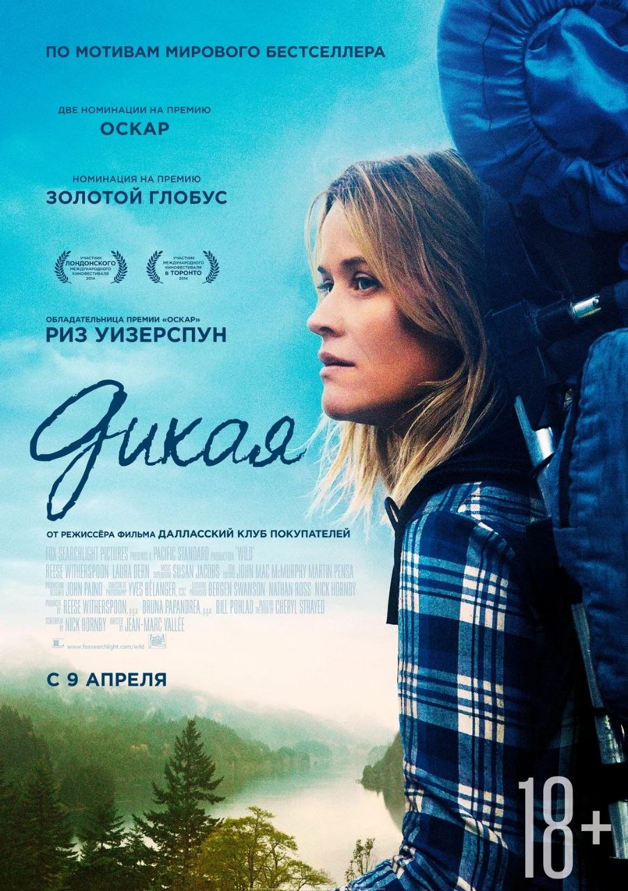
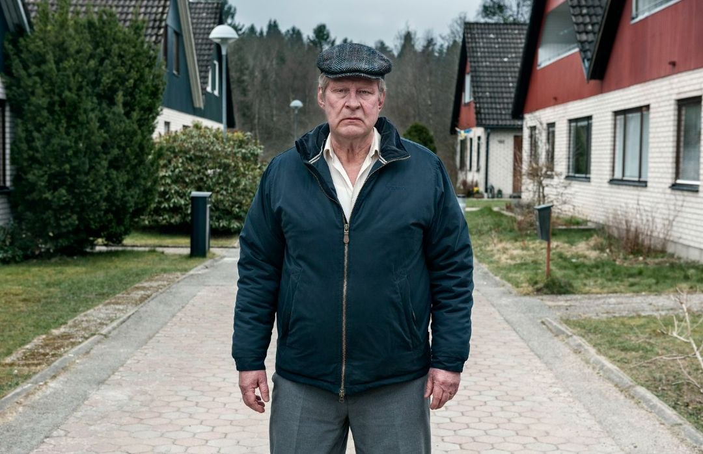
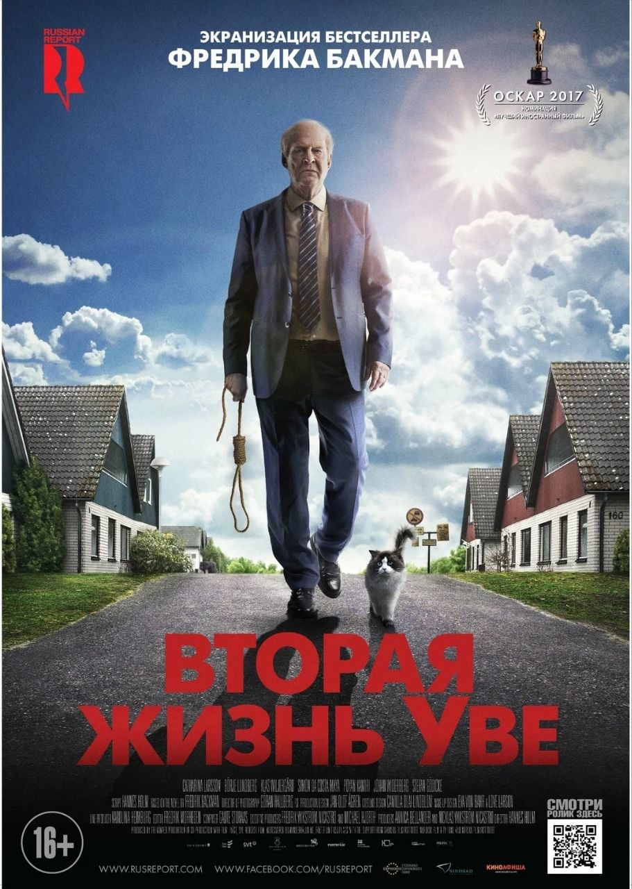
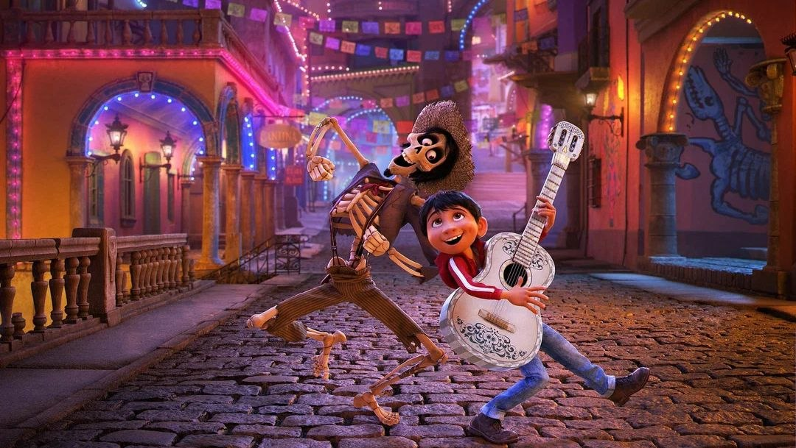
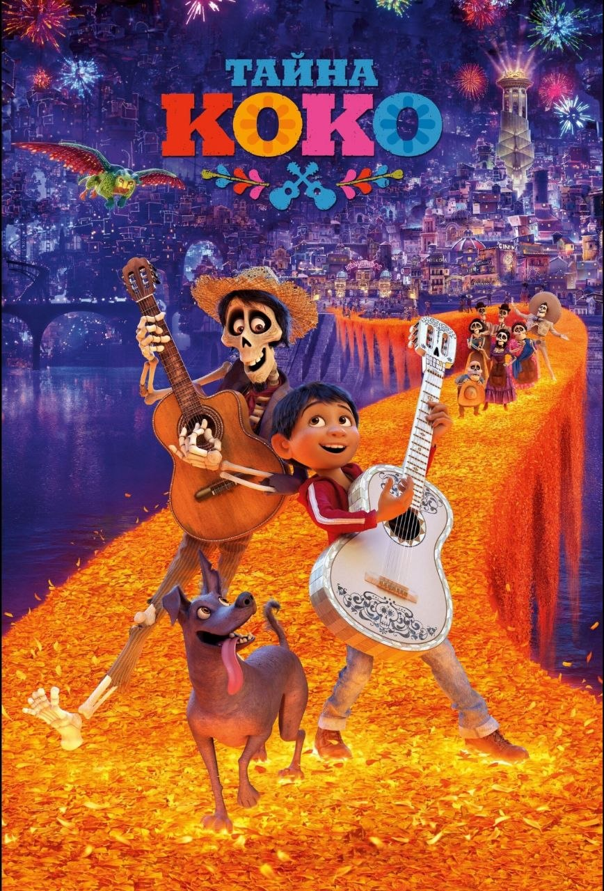

Жизнь как сценарий
5 фильмов, которые помогут пережить утрату
Скорбь после потери близкого человека — одно из самых тяжелых испытаний в жизни. Кинематограф знает, что иногда лучший способ справиться с собственной болью — это увидеть на экране чужую историю преодоления. Вот пять сильных драм, которые проживают горе не через красивые финалы, а через честный диалог с ним.
-
1.кроличья нора

Кроличья нора
Rabbit Hole
7.0 2010 Драма США
Длительность: 1 ч 31 мин
Режиссер: Джон Кэмерон Митчелл
Актеры: Николь Кидман, Аарон Экхарт, Дайэнн Уист
Бекка и Хауи Корбетт пытаются наладить жизнь спустя восемь месяцев после гибели маленького сына. Он находит поддержку в группе психологической помощи и прячет горе за бурной активностью, она — избавляется от всех вещей ребенка и замыкается в себе. Их семья балансирует на грани распада.
Герои отрицают утрату полярными способами: муж сохраняет следы, жена их стирает. Фильм не предлагает простого "счастливого конца", но показывает возможность учиться жить дальше, неся память как часть любви к ушедшему.
-
2.манчестер у моря


Манчестер у моря
Manchester by the Sea
7.6 2016 Драма США
Длительность: 2 ч 17 мин
Режиссер: Кеннет Лонерган
Актеры: Кейси Аффлек, Лукас Хеджес, Мишель Уильямс
Ли Чендлер ведет затворническую жизнь сантехника в подвальных квартирах Бостона. Возвращение в родной город после смерти брата и необходимость стать опекуном 16-летнего племянника заставляют его лицом к лицу столкнуться с трагедией, которая разрушила его собственную семью.
Ли не может переступить через свою вину и страдание. Фильм напоминает, что каждая работа горя индивидуальна, и иногда требуется профессиональная помощь, чтобы не потерять себя окончательно.
-
3.дикая


Дикая
Wild
7.2 2014 Драма, биография, приключения США
Длительность: 1 ч 55 мин
Режиссер: Жан-Марк Валле
Актеры: Риз Уизерспун, Лора Дерн, Томас Садоски
После смерти матери и собственным падением в пучину наркотиков и беспорядочных связей Шерил Стрэйд решается на отчаянный шаг — отправляется в опасное пешее путешествие по Тихоокеанскому хребту, не имея почти никакого опыта. С каждым километром пути она сражается с дикой природой и своей разбитой судьбой.
Фильм — мощная метафора движения вперед через физическую боль. Пока ноги стираются в кровь, а рюкзак кажется неподъемным, героиня перерабатывает эмоциональные травмы. Это история о том, как совершить невозможное — снова научиться чувствовать и прощать себя.
-
Понравился материал? Вы можете поддержать автора монеткой
Поддержать КиноГид -
4.вторая жизнь уве


Вторая жизнь Уве
En man som heter Ove
8.0 2015 Драма, комедия, мелодрама Швеция
Длительность: 1 ч 56 мин
Режиссер: Ханнес Холм
Актеры: Рольф Лассгорд, Бахар Парс, Филип Берг
Ворчливый пенсионер Уве потерял смысл жизни после смерти жены. Его попытки уйти из жизни постоянно срываются из-за соседей: то им нужно помочь с прицепом, то научить водить машину, то присмотреть за детьми. Благодаря этим людям он постепенно вспоминает, что такое жить.
Фильм о том, как обресить новый смысл на руинах старого. Уве считает, что мир не стоит его слёз, но ежедневные просьбы о помощи превращают его одиночество в общую жизнь. История учит: возвращение к радости часто начинается с малого — помочь другому.
-
5.тайна коко


Тайна Коко
Coco
8.7 2017 Мультфильм, фэнтези, комедия, приключения, семейный, музыка США
Длительность: 1 ч 45 мин
Режиссер: Ли Анкрич, Эдриан Молина
Актеры (озвучка): Энтони Гонсалес, Гаэль Гарсиа Берналь, Бенджамин Брэтт
12-летний Мигель мечтает стать музыкантом, но его семья запрещает даже упоминать музыку из-за проклятия предка. В канун Дня мертвых мальчик таинственным образом попадает в красочный мир живых мертвых, где ему предстоит раскрыть тайну своего происхождения и понять истинную цену памяти.
Это мультфильм, который формирует здоровое культурное отношение к самой смерти и скорби. Он мягко объясняет детям и взрослым: пока о человеку помнят в семье и делятся историями о нем — он не исчезает по-настоящему. Фильм помогает не бояться смерти, а беречь живые воспоминания.
Поделитесь своим мнением о материале или предложите фильм для следующего разбора!